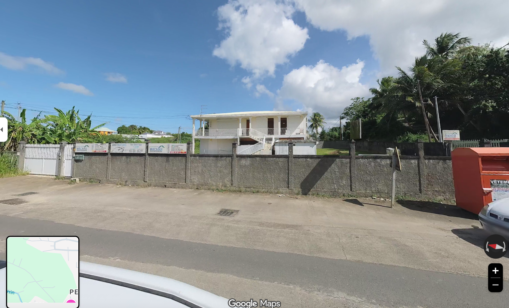

Demande de consultation
Transmettez votre demande en ligne en indiquant le motif et le cabinet souhaité.
Retrouvez les informations pratiques des deux cabinets de la Dre Lucia Cespedes-Ocampo et transmettez simplement votre demande de rendez-vous en ligne.
Indiquez votre besoin, le cabinet souhaité et vos coordonnées. Le secrétariat vous recontactera pour confirmer le rendez-vous ou vous proposer une autre disponibilité.
L’envoi du formulaire ne constitue pas une confirmation de rendez-vous. Le rendez-vous est confirmé uniquement après retour du secrétariat.
Demander un rendez-vousLa Dre Lucia Cespedes-Ocampo exerce la cardiologie en Guadeloupe et reçoit ses patients dans ses cabinets de Morne-à-l’Eau et Sainte-Rose.
Le site met à votre disposition les informations pratiques utiles pour localiser les cabinets et transmettre une demande de rendez-vous.
Informations professionnellesLe secrétariat confirme avec vous le motif, le lieu et les modalités du rendez-vous.
Transmettez votre demande en ligne en indiquant le motif et le cabinet souhaité.
Retrouvez les adresses et itinéraires des cabinets avant votre venue.
Votre rendez-vous est confirmé après retour du cabinet.
Retrouvez les adresses et les itinéraires utiles avant votre rendez-vous.

4127 Route de Abdon Saman – Perrin
97111 Morne-à-l’Eau
Route du nouveau CHU direction Perrin. Deuxième dos d’âne, face à l’épicerie Gamby.

Place Tricolore — 88J3+W89
Av. Sainte-Rose de Lima
97115 Sainte-Rose, Guadeloupe
Non. Le secrétariat vous recontacte pour confirmer le rendez-vous ou proposer une autre disponibilité.
Non. Il peut uniquement vous aider à retrouver les informations pratiques publiées sur le site.
Les adresses et les itinéraires de Morne-à-l’Eau et Sainte-Rose sont disponibles sur la page Cabinets.